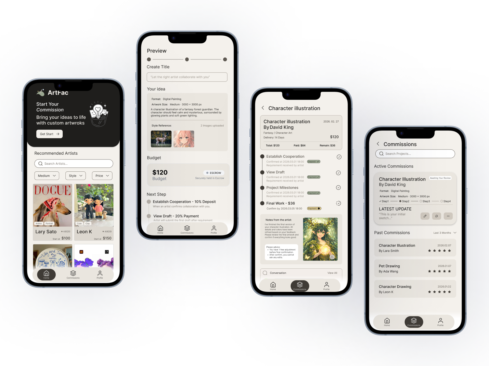
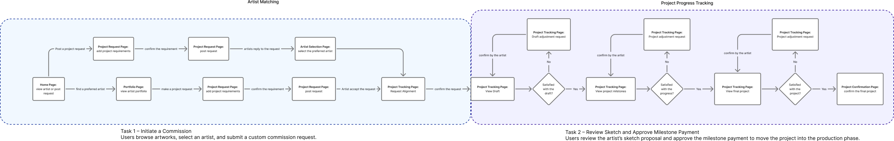
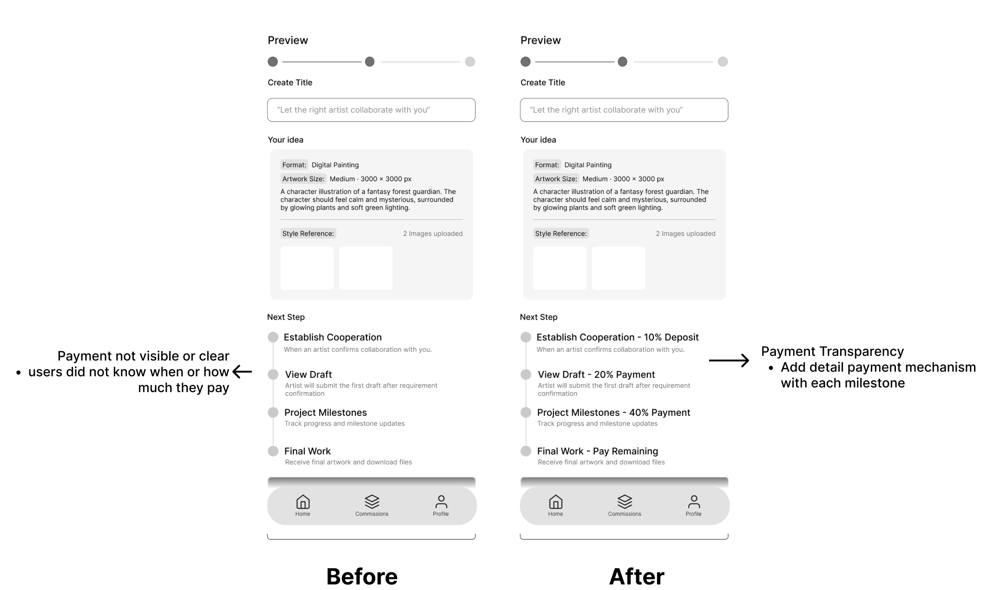
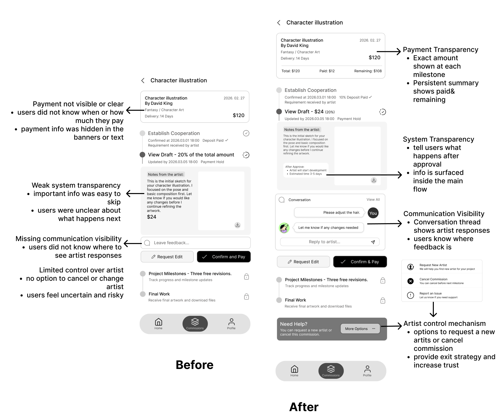
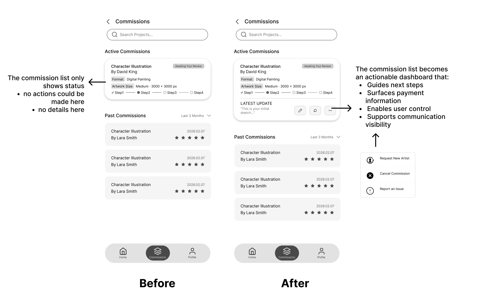
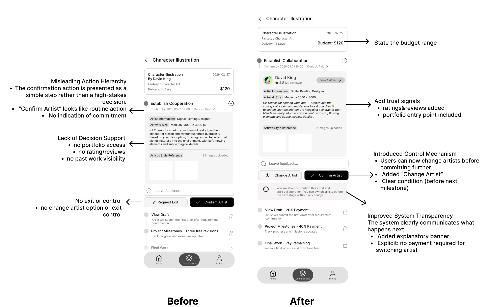

Custom art commissions are high-trust, high-ambiguity collaborations. Clients pay before the final work exists, while artists need protection from vague requests and uncontrolled revisions.

ArtFac
Designing trust into custom artwork commissions.
ArtFac is a mobile commission platform that helps clients and artists define expectations, track creative progress, manage milestone payments, and handle revisions with more clarity and control.
View Interactive Prototype ↗Case Overview
ArtFac turns informal art commissions into a structured trust workflow.
Turn an informal negotiation process into a structured commission workflow.
ArtFac makes expectations, milestone payments, progress updates, revision decisions, and artist communication visible throughout the client-side commission journey.
I contributed to group research, testing, and mid-fi exploration, then independently redesigned the final client-side flow, payment transparency, communication controls, visual system, and prototype.
Why This Project
Buying custom artwork is different from buying a finished product.
Clients make decisions before the final work exists. Artists also need protection from unclear expectations, unpaid labor, and uncontrolled revision requests.
ArtFac explores how a commission platform can reduce uncertainty by making expectations, progress, payment, and revision decisions visible throughout the collaboration.
Target Users
A two-sided commission experience.
Client
People commissioning custom artwork who need clarity around expectations, payment timing, progress, and revision boundaries.
- “I don’t know how detailed my request should be.”
- “I’m afraid of paying before knowing if I’ll like the result.”
- “I want to give feedback, but I don’t want to over-control the artist.”
Independent Artist
Independent creators who need clear project rules, fair milestone payments, and protection from uncontrolled revisions.
- “Will the scope stay clear?”
- “Will payment be released fairly?”
- “Can revision requests be managed without endless back-and-forth?”
This case study focuses on the client-side mobile experience while considering artist needs through payment, revision, and collaboration rules.
Market Gap
Existing platforms support discovery, but not the full commission lifecycle.
Market scan included finished-art marketplaces, freelance hiring platforms, and informal DM-based commission workflows.
Ready-made marketplaces
Good for browsing finished products, but weak for managing evolving custom work.
Freelance platforms
Good for hiring, but payment, revision, and creative progress can feel transactional.
Informal social commissions
Flexible, but often lack structured payment protection, progress visibility, and revision boundaries.
Gap focus
ArtFac focuses on the gap between buying finished artwork and informally negotiating a custom commission.
The Challenge
How might we help clients and artists collaborate on custom artwork with clearer expectations, safer payments, and more transparent progress?
Unclear expectations before work begins
Payment uncertainty during long creative processes
Revision requests can expand scope, timeline, and cost
Commission Lifecycle
Mapping the commission journey from idea to final delivery.
Before redesigning the interface, we mapped two key flows: how clients initiate a commission and how they review progress through milestone approvals.

Describe idea
→
Add references & budget
→
Match / choose artist
→
Confirm collaboration
→
Review draft
→
Request edit or approve
→
Release milestone payment
→
Final delivery & review
Research & Validation
Testing showed that the workflow was usable, but trust broke down around payment, next steps, and control.
Testing context:
2 task-based usability tests · peer critique · individual redesign synthesis
What we tested
Task 1
Initiate a commission and review the milestone structure.
Task 2
Review a sketch update and approve payment or request changes.
Both tasks were completed, but users hesitated when payment consequences and next actions were not explicit enough.
What changed because of testing
Task 2 observation
Payment needed to be concrete. During the milestone review task, users could move through the flow but did not clearly understand when payment happened or how much would be released.
Design response: Show exact amounts, paid balance, remaining balance, and payment status inside the milestone flow.
Peer critique
Progress needed to explain the next action. The timeline made project status visible, but it did not always explain what would happen after approval or what decision the client needed to make.
Design response: Add next-step explanations inside each milestone review state.
Testing + critique synthesis
Control needed to stay visible. Users needed clearer ways to request changes, contact the artist, or exit the collaboration before the next milestone.
Design response: Surface Request Edit, Conversation, Need Help, Request New Artist, Cancel Commission, and Report Issue inside the main workflow.
Methods used:
Group scope refinement · User flow mapping · Moderated usability testing · Peer critique · Individual redesign synthesis
Key Findings
The flow worked, but trust depended on clarity.
Finding 01
Payment transparency was weak.
Evidence During the milestone review task, users could move through the screen but did not clearly notice the payment details or understand whether payment happened at every stage.
Design implication Payment information should be shown as exact amounts inside each milestone, not hidden in banners or percentages only.
Finding 02
Progress was visible, but next actions were unclear.
Evidence Users understood that the project had a timeline, but the interface needed to explain what happened after approval and what the next client decision would trigger.
Design implication Each milestone should explain what happened, what happens next, and what decision the client needs to make.
Finding 03
Confirm & Pay overpowered revision options.
Evidence The primary Confirm & Pay CTA drew attention first, while Request Edit felt visually secondary, making the revision path easier to miss.
Design implication Approval and revision actions need clearer hierarchy so users are not pushed toward payment before reviewing alternatives.
Finding 04
Collaboration needed more control and communication.
Evidence Users needed a clearer place to see artist responses and a visible support path if they wanted to change artists, cancel, or report an issue before the next milestone.
Design implication Conversation, Need Help, Request New Artist, Cancel Commission, and Report Issue should be part of the main workflow.
Design Principles
Four principles guided the individual redesign.
Make commitment visible
Show payment, ownership, and next-step consequences before users confirm.
Turn progress into guidance
Do not only show where users are; show what they should do next.
Protect both sides
Support client control while preventing unlimited revision pressure on artists.
Keep collaboration visible
Make feedback, artist responses, and help options part of the main workflow.
Key Design Decisions
Designing a more transparent commission workflow.
These three decisions show how the final client-side workflow turns a custom commission into a guided process: setting up the request, understanding milestone commitment, and staying in control during collaboration.

Guided Commission Setup
The setup flow guides clients from the homepage CTA into a structured commission request, helping them describe their idea, add references, define budget expectations, and preview the milestone structure before moving forward.
- Turns a vague idea into a structured brief
- Adds references and budget before matching
- Previews the commission structure early

Milestone Progress + Payment Transparency
The milestone flow makes progress and payment visible together. Each stage explains what the client is reviewing, how much payment is tied to the step, and what will happen after approval.
- Shows payment inside each milestone
- Explains what happens after approval
- Connects progress status with financial commitment

Communication + Control Mechanism
Communication and support actions are surfaced inside the commission workflow, so clients know where artist responses appear and what options they still have before committing to the next milestone.
- Makes artist communication visible
- Surfaces support and help options
- Adds control paths like changing artist or canceling
Iteration Highlights
From group prototype to individual redesign.
I used usability testing and peer critique to redesign the commission workflow around clearer payment, stronger next-step guidance, more balanced actions, and visible collaboration controls.
Redesign directions:
Payment transparency
System transparency
Action hierarchy
Artist control
Communication visibility
A small typography adjustment was also applied across the final prototype to improve readability.
1 / 4
Payment Transparency in Milestones

Problem
Users could see the commission stages, but payment expectations were not explicit enough.
Design Direction
Surface payment information inside the milestone flow, showing exact payment percentages at each step instead of treating payment as separate banner information.
Outcome
The client can understand payment timing before publishing or confirming the commission.
Progress Review + Communication Visibility

Problem
Users could review the draft, but payment status, artist response, and next-step consequences were not visible enough in the same workflow.
Design Direction
Add total / paid / remaining payment summary, show artist notes and conversation thread, and surface support options inside the review flow.
Outcome
The review screen becomes a decision hub, not just a payment confirmation screen.
Commission Dashboard + Artist Control

Problem
The dashboard showed active commissions, but users had limited visibility into recent updates and no clear exit strategy if collaboration felt risky.
Design Direction
Add latest update preview, quick action buttons, and a More Options menu with Request New Artist, Cancel Commission, and Report an Issue.
Outcome
Users can monitor commission status and access control options without digging into the full project page.
Artist Confirmation + Commitment Clarity

Problem
Confirming an artist felt like a high-commitment action, but users did not have enough context or control before moving forward.
Design Direction
Add artist detail, portfolio access, Change Artist, confirmation CTA hierarchy, and a condition note clarifying that users can switch artists before the next stage without charge.
Outcome
Artist confirmation becomes more transparent and less risky for the client.
Reflection
Designing systems, not just screens.
This project changed how I think about progress tracking.
At first, I treated the timeline as the main trust mechanism. If users could see the commission stages, I assumed they would feel more confident. Testing and critique showed that visibility alone was not enough. Users also needed to know what each step meant: how much money would be released, what would happen after approval, and what choices they still had before moving forward.
The second challenge was control. Adding Request Edit, Change Artist, Cancel Commission, and Report Issue made the client-side flow feel safer, but these controls also create risk for artists if they are unlimited. A commission platform cannot only give clients more options; it also needs rules around when changes are allowed, when payment is protected, and how scope is negotiated.
If I continued this project, I would design and test the artist-side workflow next. I would focus on how artists accept requests, clarify scope, respond to revision limits, and protect their time while still keeping the collaboration flexible for clients.
Prototype
Explore the final ArtFac prototype.
Click through the final client-side commission workflow, from posting a request to reviewing progress, confirming payments, and managing revisions.